计算机视觉导论¶
约 5802 个字 11 张图片 预计阅读时间 17 分钟
任课教师：周晓巍
Reference: Umich EECS 498/598 Deep Learning for Computer Vision, https://note.noughtq.top/ai/cv/, https://you-ao.github.io/AI/CV/
少数大三下一丁点没学的课之一，呃呃呃
01. intro¶
- CV Tasks
- 3D 重建（元素定位、SLAM）
- 图像理解
- 图像合成
02. Review of Linear Algebra & Image Formation¶
向量&矩阵复习：我去，这不是我们最喜欢的线性代数吗
Each Matrix can be regarded as a geometric transformation
仿射变换 = 线性变换 + 平移，Using homogeneous coordinates：\((x', y', 1)^T = \begin{bmatrix} a & b & tx \\ c & d & ty \\ 0 & 0 & 1 \end{bmatrix} (x, y, 1)^T\)
特征值的几何含义：对特征向量进行矩阵形式的线性变换后，方向不变，长度变为原来的 \(\lambda\) 倍
相机与透镜 Camera & Lens¶
试着设计一个相机
idea1：直接将一片可以接收物体反射光的薄膜放在物体前面：物体上任意一点的光都会照到薄膜的每一处，导致并不是 one-to-one 接受光线
于是 idea2：在薄膜前面加一个小孔（光圈，aperture），只允许通过小孔的光线照到薄膜上
但是小孔并不是越小越好：会导致进光量减少，且还有光的衍射现象，于是引入 lens（透镜），透镜可以聚集光，且焦距 \(f\)，物距 \(o\)，像距 \(i\) 具有关系（高斯公式）：\(\frac{1}{f} = \frac{1}{o} + \frac{1}{i}\)
Magnification
透镜可用于放大图像：\(Magnification = \frac{image\ height}{object\ height} = \frac{i}{o} = \frac{f}{o-f}\)，于是焦距越大，放大率越大。
FOV
焦距的另一个用途是改变视域（Field of View, FOV）
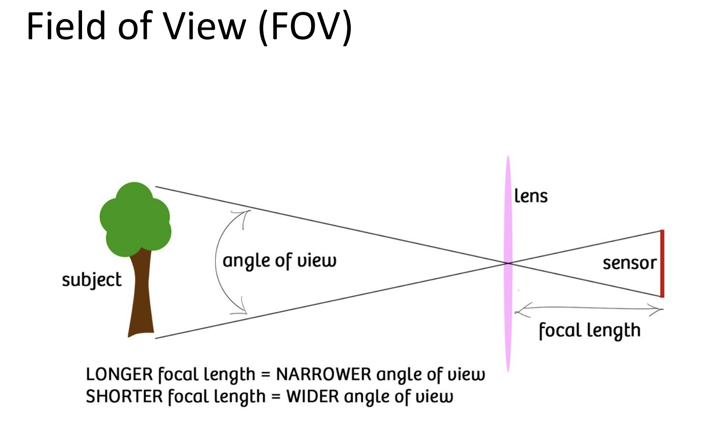
Depends on 焦距 \(f\) and 传感器大小 \(s\)，焦距越长/传感器越小，视角越小。
Aperture 的尺寸由镜片的直径刻画，记为 \(D\)
一种更好的描述方式是通过 f-number：\(N = f/D\)，其中 \(f\) 是焦距，那么光圈 \(D = \frac{f}{N}\)
镜头失焦 Lens Defocus¶
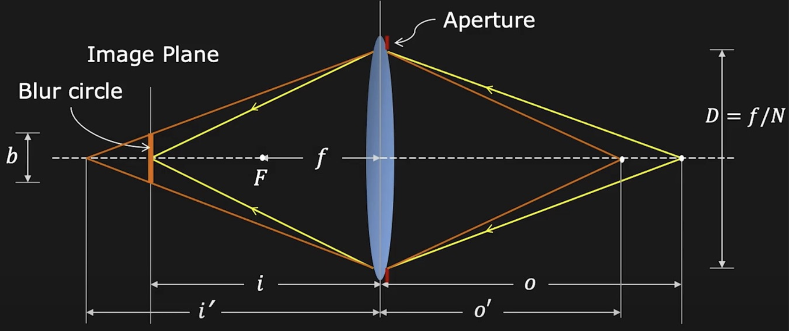
如图，假设物体原先在 \(o\) 处，接收像的位置（底片位置）在 \(i\) 处，现在物体移动到 \(o'\) 处，光线会聚焦在 \(i'\) 处，于是在 \(i\) 处会形成一个模糊光斑，称为 Blur Circle，其直径为 \(b\)，可由相似三角形得到：
那么光斑直径 \(b = D \frac{|i - i'|}{i'}\)，可见光圈直径减小时，可以减小光斑直径，从而减小失焦模糊
调焦 Focusing¶
在像距 \(i\) 和焦距 \(f\) 固定的情况下，只有在同一平面内得到的图像是最清晰的，因此需要调节使得物体成像清晰
- 通过移动镜头位置来调节
- 通过改变底片位置来调节
景深 Depth of Field¶
在实际拍摄中只需要光斑的直径小于某个值 \(b_{max}\)（一般以一个像素的大小作为最大光斑直径）即可接受，于是只在某一个范围内的物体位置都能成像清晰，这个范围称为景深 DoF
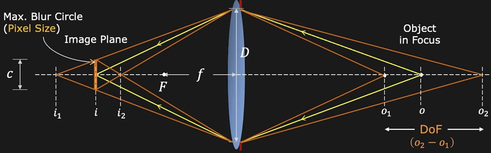
景深范围与焦距 \(f\)、光圈 \(D\) 成反比
How to blur background?（使景深范围缩小，方便背景虚化即可） Large aperture, Long focal length, Near Foreground, Far Background
Geometric image formation¶
相机模型将三维空间中的点映射到二维图像平面上
- 正射投影（Orthographic Projection）：忽略深度信息，直接将三维点 \((X, Y, Z)\) 映射到二维点 \((X, Y)\) 上
- 透视投影（Perspective Projection）：考虑深度信息，下面主要介绍透视投影
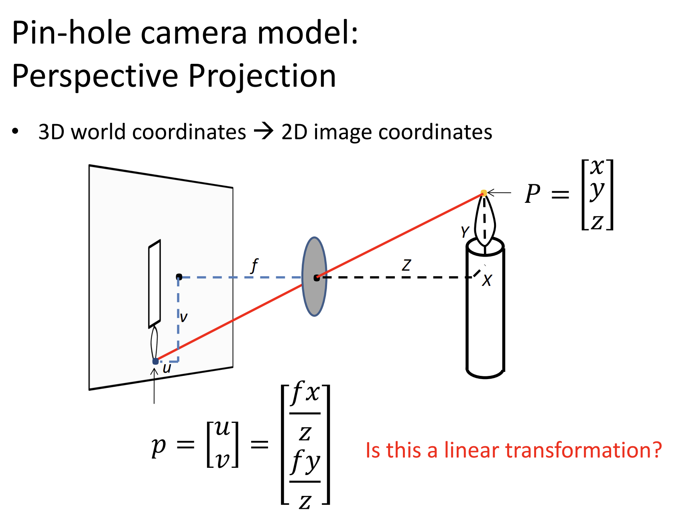
在笛卡尔坐标系中，这种投影变换不是线性的，于是需要使用齐次坐标
齐次坐标
笛卡尔坐标转换为齐次坐标：\((x,y)^T \rightarrow (x, y, 1)^T\), \((x,y,z)^T \rightarrow (x, y, z, 1)^T\)
齐次坐标转换为笛卡尔坐标：\((x, y, w)^T \rightarrow (\frac{x}{w}, \frac{y}{w})^T\), \((x, y, z, w)^T \rightarrow (\frac{x}{w}, \frac{y}{w}, \frac{z}{w})^T\)
一个齐次坐标可能对应多个笛卡尔坐标，但它们只有长度上的缩放关系
利用齐次坐标，可以将透视投影表示为线性变换：
经过透视投影后，成像中长度、角度等信息会损失/改变，但线的曲直得到保留
由于角度信息损失，会出现 Vanishing Point：三维空间内平行线在二维图像上投影后相交的点
- 两条平行线有相同的灭点 v
- 相机中心与灭点连成的直线平行于原直线
- 灭点可能在画面外或无限远处
平面上的所有线的灭点构成的点集形成灭线（Vanishing Line）：相互平行的空间平面在成像空间收敛于同一条灭线，即一组平行平面在二维图像上投影后相交的直线，例如地平线
透视畸变 Perspective Distortion
由于透视投影的性质形成的成像畸变，与镜片无关
越远离相机中心，物体成像的畸变越明显
Radial Distortion 径向畸变¶
另一种畸变，靠近图像边缘的部分会被拉伸或压缩；由有瑕疵的镜片导致
- 枕形畸变 Pin cushion（长焦镜头常见）
- 桶形畸变 Barrel（广角/短焦镜头常见）
这种畸变的数学计算：
其中 \(x, y\) 是理想情况下的坐标，\(x_{distorted}, y_{distorted}\) 是畸变后的坐标，\(k_1, k_2\) 是畸变参数，和镜头有关
Photometric Image Formation¶
- Shutter Speed：快门速度，控制光线进入相机的时间长度
- Color Space
- RGB
- 红、绿、蓝三种颜色，每个颜色通过 0～255 8bit 的数据进行表示
- HSV
- Hue 色调 Saturation 饱和度 Value 亮度
- RGB
03. Image Processing¶
- 增加图片对比度：S curve，使得暗部更暗，亮部更亮 \(output(x,y) = f(input(x,y))\)
- 颜色反转 \(output(x,y) = 1 - input(x,y)\)
- 图像模糊：利用边缘检测（Edge Detection）提取并滤除高频信息
下面主要介绍图像模糊
卷积 Convolution¶
\((f * g)(x) = \int_{-\infty}^{\infty} f(t) g(x - t) dt\)
- f(t): conv kernel
- g(x - t): signal
- (f * g)(x): output signal
对于滤波 kernel 扫描图像边界时，图像边界外的像素值无法获取，使用 padding 技术进行填充
- Zero values 填充 0
- Edge values 填充边界值
- Symmetric 以与边界的对称方式填充
图像模糊 Blurring¶
- 通过卷积实现图像模糊
- Box filter: 卷积核全为 1
- Gaussian filter:
- 卷积核/滤波器的每一个值由二维高斯函数计算得到：\(f(i,j) = \frac{1}{2\pi \sigma^2} e^{-\frac{i^2 + j^2}{2\sigma^2}}\)
图像锐化 Sharpening¶
实质是向图像中加入高频信息
对于图像 \(I\)
- 先获取 Low Frequency：\(Blur(I)\)
- High Frequency：\(I - Blur(I)\)
- Sharpened Image：\(I + \alpha (I - Blur(I))\)，\(\alpha\) 控制锐化程度
边缘检测 Edge Detection¶
\(\begin{bmatrix} -1 & 0 & 1 \\ -2 & 0 & 2 \\ -1 & 0 & 1 \end{bmatrix}\)：提取水平方向的 Gradient，检测垂直边
\(\begin{bmatrix} -1 & -2 & -1 \\ 0 & 0 & 0 \\ 1 & 2 & 1 \end{bmatrix}\)：提取垂直方向的 Gradient，检测水平边
Bilateral filter：在保持边缘的同时进行模糊（不考）
图像采样 Image Sampling¶
在图片缩放时，需要对像素进行采样；每隔一点采样一次即可得到尺寸为原先一半的图片，但是会导致信息丢失，出现混叠（Aliasing）现象
Aliasing
由于信号变化的频率过快或采样的频率过低导致
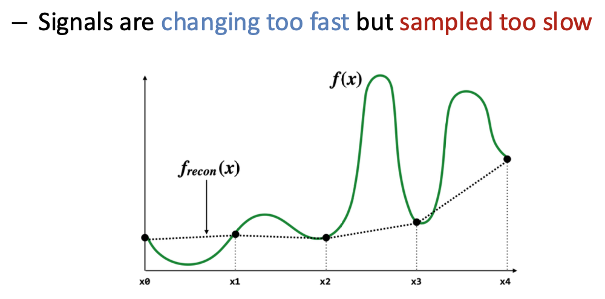
Examples：摩尔纹
减少混叠的方法：
- 增加采样频率
- Antialiasing Filter
- 改变原来信号的频谱，在采样前使用低通滤波器减少一部分图像的高频部分
图像放大 Image Magnification¶
图像放大就是上采样（Upsampling），这时反而需要对缺失的信息进行插值（Interpolation）
- 一维插值方法
- 最近邻插值
- 线性插值
- 多项式插值
- 二维插值方法
- 双线性插值
- 双多项式插值
改变宽高比 Image Aspect Ratio Change¶
方案：删去图片中不重要的部分：与周围像素接近的部分。通过边缘能量（Edge Energy）来衡量像素的重要性：
利用卷积进行求导
- 接缝裁剪（seam carving）：自顶向下寻找一条使像素边缘能量最小化的连接路径。\(M_{i,j} = E(i,j) + \min(M_{i-1,j-1}, M_{i-1,j}, M_{i-1,j+1})\)
- 接缝插入（seam insertion）：以同样的方法找到若干条接缝，然后对每条自顶向下的接缝进行插值，以放大图像
04. Model fitting & Optimization¶
我就知道学机器学习赌对了
Optimization¶
\(\textbf{minimize} \quad f_0(x)\)（objective function）
\(\textbf{subject to} \quad f_i(x) \leq 0, i = 1, ..., m; \quad g_i(x) = 0, i = 1, ..., p\)（前者称为不等式约束，后者称为等式约束）
Image Deblurring
模糊图像的还原可看作追求 \(\min_X \|Y - FX\|^2\)，其中 \(Y\) 是模糊图像，\(X\) 是清晰图像，\(F\) 是模糊 kernel
Model Fitting¶
A mathematical model \(𝑏 = 𝑓_𝑥(𝑎)\) describes the relationship between input 𝑎 and output 𝑏, where x is model parameter。如线性模型 \(b = a^T x\)。
需要找到最优参数 \(x^*\)（即从 data 中学习参数），经典的方法是使 均方误差（MSE, Mean Squared Error） 最小化：\(\hat{x} = \arg\min_x \sum_{i=1}^n (b_i - f_x(a_i))^2\)
Numerical Methods¶
𝒙 ← 𝒙𝟎% Initialization
while not converge
𝒉 ← descending_direction(𝒙) % determine the direction
α ← descending_step(𝒙, 𝒉) % determine the step
𝒙 ← 𝒙 + α𝒉 % update the parameters
接下来需要用一些方法确认下降方向和步长
- 梯度下降（Gradient Descent）
- 下降方向：\(h = -\nabla f(x)\)（此时目标函数下降最快）
- 下降步长：在 \(\phi(\alpha) = f(x_0 + \alpha h)\) 和 \(\alpha\) 接近时，是比较好的步长
- 易于实现，在离最小值较远时表现不错
- 接近最小值时收敛很慢，浪费大量计算
- 牛顿法（Newton Method）
- 下降方向：\(h = -H^{-1} \nabla f(x)\)，其中 \(H\) 是 Hessian 矩阵
- 在最小值附近收敛很快
- 需要计算 Hessian 矩阵，计算量大
- 高斯-牛顿法（Gauss-Newton Method）
- 下降方向：\(h = -(J^T J)^{-1} J^T R(x)\)，其中 \(J\) 是雅可比矩阵，\(R(x)\) 是残差向量
- 计算量小，收敛快
鲁棒性估计 (Robustness Estimation)¶
在实际问题中，数据中可能包含异常值（Outliers，距离 assumption 很远），这些异常值如果数量很多，会对 MSE 产生较大影响
需要使用鲁棒函数代替 MSE，例如 L1 范数（绝对值损失函数）：\(\rho(r) = |r|\)，Huber 损失函数
RANSAC - Random Sample Consensus
关键思想：Inliers 之间的分布很类似，而 Outliers 则是随机分布的
使用两两数据点对进行投票
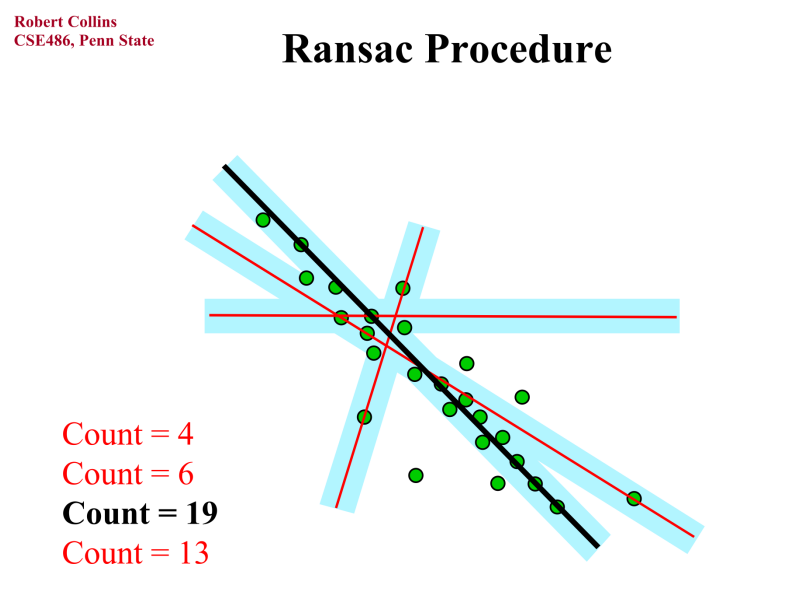
05. Image Matching & Motion Estimation¶
Image Feature Matching 图像特征匹配¶
找到两张图像中点与点之间的对应关系，分为下面三个步骤：
- 检测：找到关键点
- 描述：对每个关键点提取向量特征描述符
- 匹配：比较两张图中任选一对点的描述符，找到最相似的一对
检测 Detection¶
对于比较“Unique”的关键点，很容易在另一张图中找到对应点——如何寻找 Unique 的关键点？
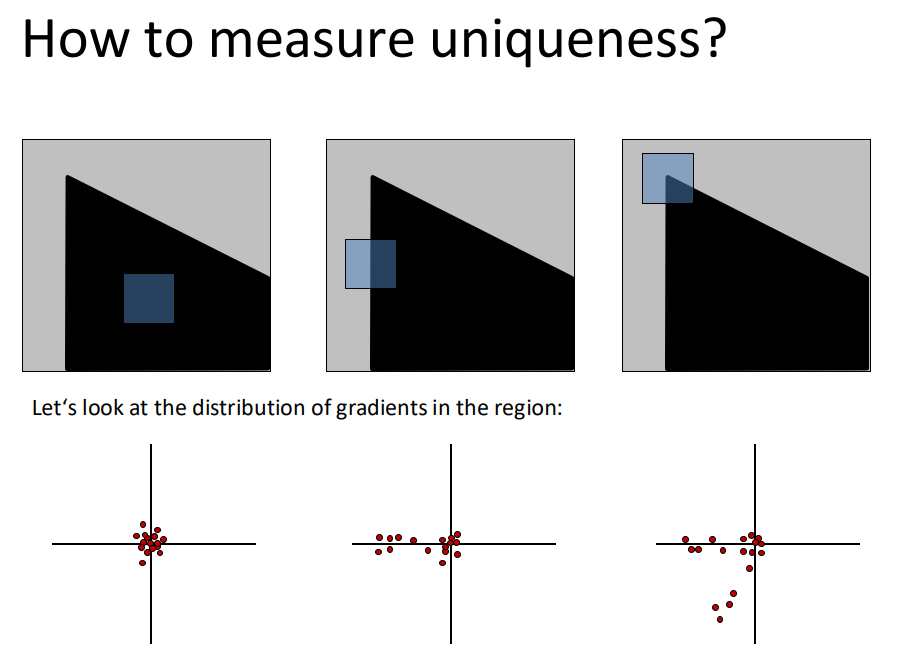
移动窗口，找到沿任意方向移动时像素变化较大的部分（称为角，corner），表现为图中梯度的分布。
利用 PCA 主成分分析定量判断梯度的分布：
- 第一主成分：方差最大即数据最分散的方向
- 第二主成分：与第一主成分正交且方差最大（剩余部分数据最分散）的方向
- 角的两个主成分都很大
Harris Corner Detector：计算角响应值 Corner Response \(f = \frac{\lambda_1 \lambda_2}{\lambda_1 + \lambda_2}\)，\(\lambda_1, \lambda_2\) 是两个主成分特征值
计算得到每个像素的角响应值后，寻找局部区域中的极大值作为角点
响应值 invariant：
- 光强移动：I -> I + c
- 图片平移 Image translation
- 旋转 Rotation
not invariant：
- 光强缩放 Intensity scaling I -> kI
- 图片缩放 Image scaling
Blob Detector：寻找图像中斑点（Blob）状的区域作为特征点，其二阶导很大
拉普拉斯 Filter：\(\nabla^2 I = \frac{\partial^2 I}{\partial x^2} + \frac{\partial^2 I}{\partial y^2} = \begin{bmatrix}0 & 1 & 0 \\ 1 & -4 & 1 \\ 0 & 1 & 0 \end{bmatrix}\)
- LoG (Laplacian of Gaussian)：先对图像进行高斯模糊，再使用拉普拉斯滤波器
- \(\nabla^2 (f * g) = f * (\nabla^2 g)\)
- 使用两个不同尺度的高斯滤波器，计算差分（DoG, Difference of Gaussian）近似 LoG
描述 Description¶
Idea：相似的图像块应该有相似的描述符
- 尺度不变特征变换 SIFT (Scale Invariant Feature Transform)
- 计算关键点处的梯度方向直方图，作为描述符
- Robust to image scaling, rotation, illumination changes
- 旋转：虽然旋转后角响应值不变，但是梯度方向直方图发生了 shifting，需要找到主方向，以其作为基准旋转图像，直到两张图对齐。
匹配 Matching¶
Given a feature in I1, how to find the best match in I2?
- 定义两个描述符之间的距离
- L2 distance: \(d = ||f_1 - f_2||_2 = \sqrt{\sum_i (f_{1i} - f_{2i})^2}\)
- Radio Test: \(d = \frac{||f_1 - f_2||_2}{||f_1 - f_3||_2}\)，其中 \(f_2\) 是 \(I_2\) 中距离 \(f_1\) 最近的描述符，\(f_3\) 是 \(I_2\) 中距离 \(f_1\) 第二近的描述符。值越大，说明 \(f_2\) 和 \(f_3\) 越接近，越容易出现误匹配
- 相互最近邻（Mutual Nearest Neighbor）：可靠的匹配需要保证 \(f_1\) 在 \(I_2\) 中的最近邻是 \(f_2\)，且 \(f_2\) 在 \(I_1\) 中的最近邻是 \(f_1\)
- L2 distance: \(d = ||f_1 - f_2||_2 = \sqrt{\sum_i (f_{1i} - f_{2i})^2}\)
- For all features in I2, compute the distance to the feature in I1, find min distance
Motion Estimation 运动估计¶
- 特征追踪：提取特征点，并在多帧间追踪它们；输出稀疏点位移
- 光流法 Optical Flow：Recover image motion at each pixel；输出稠密位移场，称为光流场
两个问题通过 Lucas-Kanade method 解决，该方法假设如下三点：
- Small Motion：相邻两帧间像素位移较小
- Brightness Consistency：同一物体的像素亮度在不同帧中保持相似
- Spatial Coherence：相邻像素的运动是相似的
需要求解位移 \((u, v)\)，由 Brightness Consistency 有 \(I(x, y, t) = I(x + u, y + v, t + 1) \approx I(x, y, t) + I_x u + I_y v + I_t\)
那么 \(I_x u + I_y v + I_t = \nabla I \cdot [u, v]^T + I_t = 0\)
还需要一个等式（因为有两个未知数），由 Spatial Coherence 可知在一个小窗口内，所有像素的位移 \((u, v)\) 是一样的，于是 \(N*N\) 的窗口就给出了 \(N*N\) 个方程，可以通过最小二乘法优化得到 \(A^T A [u, v]^T = -A^T b\)，在 \(A^T A\) 可逆且 well-conditioned 的情况下，可以求解出 \((u, v)\)
如果 Motion 很大，为了满足 Small Motion，需要降低分辨率
06. Image Stitching¶
Image Warping 图像扭曲¶
仿射变换：
\(\begin{bmatrix} x' \\ y' \end{bmatrix} = \begin{bmatrix} a & b \\ c & d \end{bmatrix} \begin{bmatrix} x \\ y \end{bmatrix} + \begin{bmatrix} t_x \\ t_y \end{bmatrix}\)
使用齐次坐标（在最底下添加一行 001）：
\(\begin{bmatrix} x' \\ y' \\ 1 \end{bmatrix} = \begin{bmatrix} a & b & t_x \\ c & d & t_y \\ 0 & 0 & 1 \end{bmatrix} \begin{bmatrix} x \\ y \\ 1 \end{bmatrix}\)
投影变换：
\(\begin{bmatrix} x' \\ y' \\ 1 \end{bmatrix} = \begin{bmatrix} h_{11} & h_{12} & h_{13} \\ h_{21} & h_{22} & h_{23} \\ h_{31} & h_{32} & h_{33} \end{bmatrix} \begin{bmatrix} x \\ y \\ 1 \end{bmatrix}\)
具有尺度不变性，因此给每个元素除以 \(h_{11}\) 可得到八个自由度
图像扭曲实现¶
- Forward Mapping：对于源图像中的每个像素 \((x, y)\)，计算其在目标图像中的位置 \((x', y') = T(x, y)\)，然后将源图像的像素值赋值给目标图像的对应位置
- 问题：可能会出现目标图像中得到对应的坐标在 pixels “中间”
- Inverse Mapping：对于目标图像中的每个像素 \((x', y')\)，计算其在源图像中的位置 \((x, y) = T^{-1}(x', y')\)，然后将源图像的像素值赋值给目标图像的每个像素
- 问题，计算源图像中对应的坐标也会出现 landing between pixels 的问题，需要插值
插值：
- Nearest Neighbor
- Weighted Sum
- ...
图像拼接 Image Stitching¶
- RANSAC
- Randomly choose s samples (Typically s = minimum sample size that lets you fit a model)
- Fit a model (e.g., transformation matrix) to those samples
- Count the number of inliers that approximately fit the model
- Repeat N times
- Choose the model that has the largest set of inliers
全景图 Panorama¶
使用圆柱投影：
其中 (x', y') 是圆柱投影后的坐标，(x, y) 是图像坐标，f 是焦距，r 是圆柱的半径
07. Structure from Motion (SfM)¶
通过一系列不同角度拍摄的照片，计算3d模型上每个点的坐标（构成点云），从而重建其3d建模和相机的 poses
需要处理三个问题：
- 三维坐标怎么映射到照片的二维坐标（camera model）
- 怎么在世界坐标系中计算相机的位置与朝向（camera calibration & pose estimation）
- 怎么重建3d点云（sfm）
Camera Model 相机模型¶
相机本身的坐标系（相机坐标系），xy轴位于相机屏幕平面，z轴正方向为相机的 orientation
照片的生成：世界坐标系中的坐标转换到相机坐标系下（coordinate transformation），再投影到二维平面下（perspective projection），二维平面的坐标（毫米）转化为坐标（像素）（image plane to image sensor）
外参（位置和朝向）矩阵处理世界坐标系 -> 相机坐标系，内参（分辨率，焦距等）矩阵处理后面两个过程
坐标转换¶
记世界坐标系中，相机位置为 \(\bold{c_x}\)，朝向为 \(R\)，其中
且 R 是标准正交矩阵
第一行是相机 x 轴在世界坐标系下的表示，第二行是相机 y 轴在世界坐标系下的表示，第三行是相机 z 轴在世界坐标系下的表示。
那么给定世界坐标系下的点 \(\bold{x_w}\)，其在相机坐标系下的位置为：
那么用齐次坐标表示为（这个 4*4 称为外参矩阵）：
透视投影¶
见 Lec02 Geometric image formation 一节
\(x = \begin{bmatrix} f & 0 & 0 & 0 \\ 0 & f & 0 & 0 \\ 0 & 0 & 1 & 0 \end{bmatrix} \begin{bmatrix} x_c \\ y_c \\ z_c \\ 1 \end{bmatrix} = \begin{bmatrix} f x_c \\ f y_c \\ z_c \end{bmatrix} \rightarrow \bold{x} = \begin{bmatrix} \frac{f x_c}{z_c} \\ \frac{f y_c}{z_c} \end{bmatrix}\)
Image Plane to Image Sensor¶
其中 \(f_x = f \cdot m_x\)，\(f_y = f \cdot m_y\)，\(m_x, m_y\) 分别是每毫米对应的像素数 (pixels/meter)
内参矩阵 \(M_{int} = \begin{bmatrix} f_x & 0 & c_x & 0 \\ 0 & f_y & c_y & 0 \\ 0 & 0 & 1 & 0 \end{bmatrix}\)
相机标定 Camera Calibration¶
\(\bold{u} = M_{int} M_{ext} \bold{x_w}\)，需要求内参矩阵 \(M_{int}\) 和外参矩阵 \(M_{ext}\)
https://note.noughtq.top/ai/cv/7#camera-calibration
视觉定位问题¶
给定一组2维图像，确定相机在三维空间的位置和朝向
优化目标：最小化 reprojection error
SfM¶
epipolar geometry
08. Depth Estimation & 3D Reconstruction¶
稠密的三维重建
Depth：目标点到相机平面的距离；有很多应用：避障、人脸识别
- Active Depth Sensing：主动发射信号到环境中，通过接收反射信号计算距离，如雷达
- Passive Depth Sensing：通过 RGB 图像计算深度，如立体视觉
立体视觉匹配 Stereo Vision Matching¶
在三维空间中定位点需要两只眼睛（两条视线的交点）
Best：极线是水平线（如果不是的话，需要进行立体图像矫正，将图像平面投影到一个与相机中心连线平行的公共平面上。）要求如下：
- 相机的像平面相互平行，并且也和基线（两条相机连线）平行
- 两台相机中心的高度相等
- 两台相机焦距相等
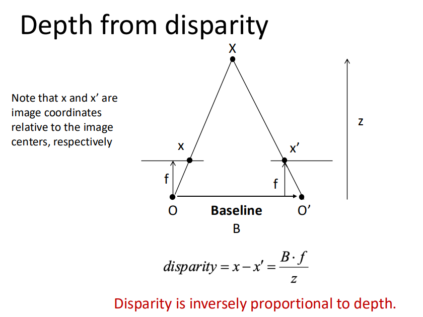
其中 \(z\) 是深度，\(f\) 是焦距，\(B\) 是两台相机的间距，\(x - x'\) 是视差（disparity）
09. Deep Learning¶
Linear Classifier¶
\(x\) 和权重 \(w\) 相似时，得到的 score \(w^T x\) 越大
loss function for regression: MSE: \(\sum_i (f(x_i) - y_i)^2\)
不能用于 score based 分类问题，因为 score 是连续值(-inf, +inf)，需要把 score 转化为概率分布(0-1)
softmax function: \(S_j = \frac{e^{f_j}}{\sum_k e^{f_k}}\)
cross-entropy loss: \(D(groundtruth, prediction) = -\sum_i y_i \log S_i\)
Neural Networks¶
线性 -> 非线性（激活函数）：Sigmoid，Relu... 即每个 perceptron：\(f(x) = \sigma(w^T x + b)\)
multi-layer NN: \(f(x) = \sigma(W_n \sigma(W_{n-1} ... \sigma(W_1 x + b_1) ... + b_{n-1}) + b_n)\)
- Fully connected layers
Convolutional Neural Networks¶
10. Recognition¶
语义分割（Semantic Segmentation）¶
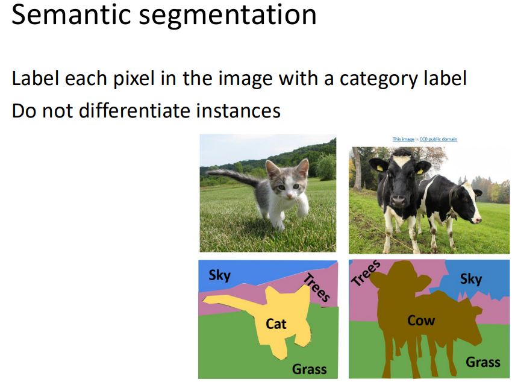
仅区分不同类别的像素并标注，例如说图片中有许多个同种物体（许多只猫），这时语义分割只标注哪些像素是猫，而不区分该像素属于哪只猫（Do not differentiate instances）
如何实现语义分割？
- 早期的方法是利用 sliding window，在图像上滑动一个窗口，对窗口内的像素利用 CNN 进行分类，得到该窗口内像素的类别标签，这样太慢了，并且 receptive field 太小
- Fully Convolutional Network (FCN)：make all predictions at once，输出一张预测图（语义图），损失函数是每个像素的交叉熵。
- High-resolution ->(via down-sampling) Low-resolution ->(via up-sampling) High-resolution
- Upsampling(Unpooling)
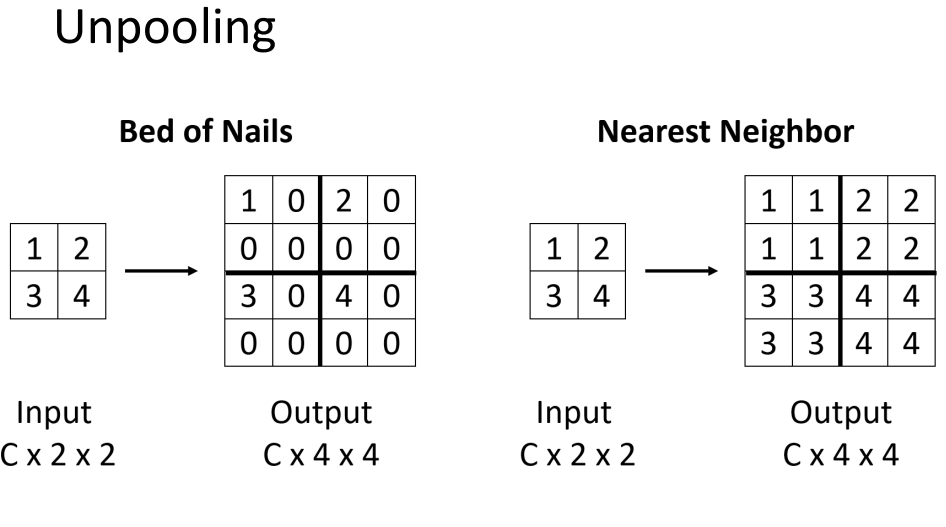
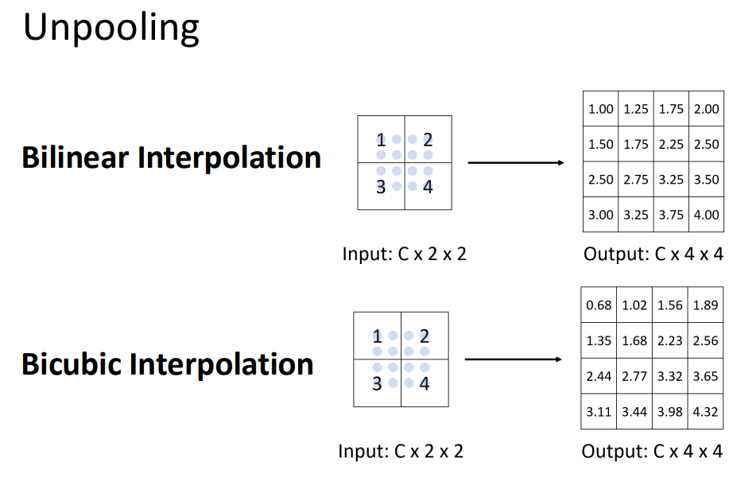
- 称为 Transposed Convolution
- U-Net
- skip connection: combine low-level features with high-level features to get better prediction（从下采样阶段中的某一层直接skip到上采样阶段的某个层，使得某些可能在下采样过程中丢失的细节信息得以保留）
- DeepLab
- FCN + Atrous Convolution + CRF(Conditional Random Field)
Evaluation Metrics: IOU(Intersection over Union) = area(预测面积 \(\cap\) 真实面积)/area(预测面积 \(\cup\) 真实面积)
Object Detection¶
Input: single RGB image
Output: A set of bounding boxes that denote objects
- Region Proposal: generate a set of candidate object bounding boxes - R-CNN
- Bounding box 的质量也通过 IOU 来衡量
TBD
Instance Segmentation¶
Human Pose Estimation¶
在人体上定义一系列关键点（keypoints），如头顶、肩膀、肘部、手腕、臀部、膝盖、脚踝等
- 单人
- 多人
- Top-down：在每个 bounding box 内进行单人 pose estimation（Mask R-CNN）
- Bottom-up：先检测所有关键点，再将关键点组装成不同的人（OpenPose）
Others¶
光流（Optical Flow）：描述图像中像素点的运动
- FlowNet
- Raft
Video Classification：识别 actions
Deep Learning for 3D Vision¶
DL4 Feature Mapping¶
DL4 Object Pose Estimation¶
Computational Photography¶
在成像过程中利用计算技术（算法）提升图像质量或实现特殊效果
HDR(High Dynamic Range)¶
Dynamic Range：图像中最亮和最暗部分的比值
DR 过低就导致很亮或很暗的地方拍出来没有层次，细节丢失（黑糊糊一片）
- 曝光包围(exposure bracketing)：在不同曝光下捕捉多个 LDR 图像
- 合成 HDR 图像：将多个 LDR 图像合成为一个 HDR 图像
Deblurring¶
由于失焦或运动模糊导致图像模糊
- 非盲图像反卷积（NBID）：空间反卷积 = 频域中的除法
- 优化：添加正则化项
Colorization¶
- Sample-based methods：对目标图像使用源图像的颜色进行着色